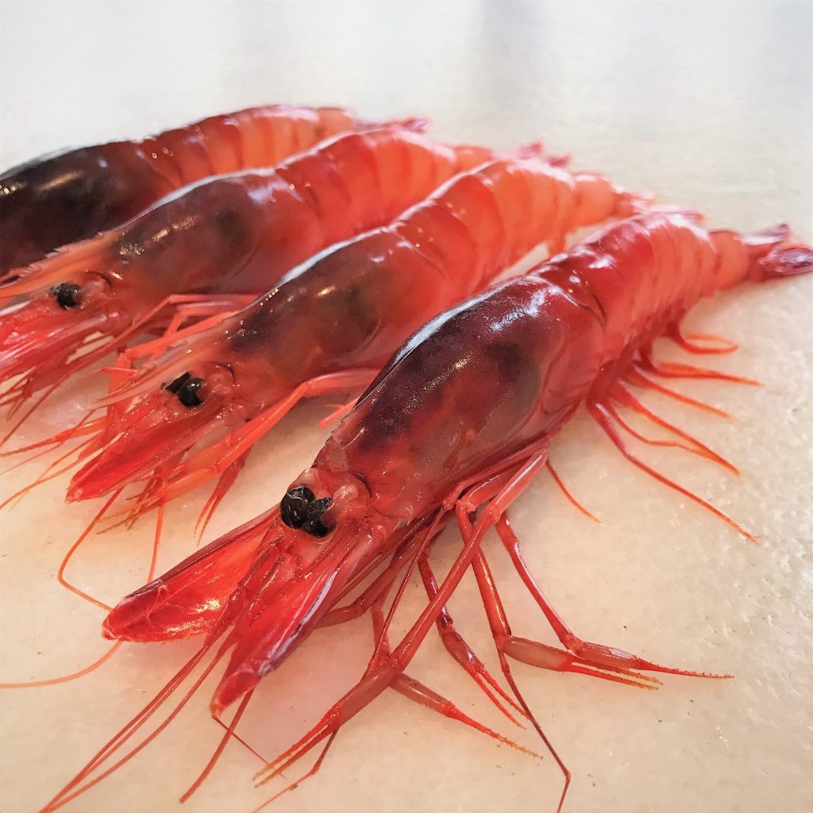
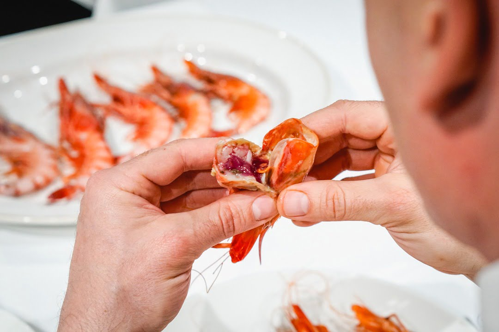
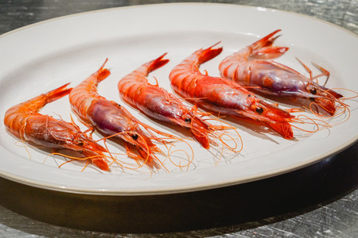
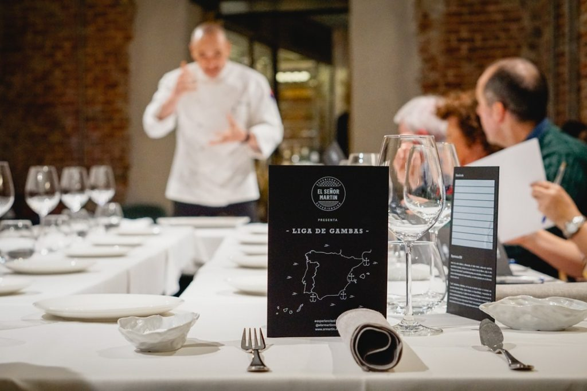
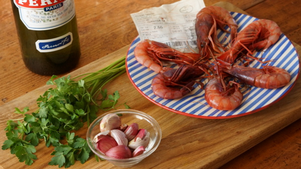
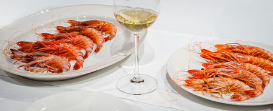

La misma gamba, diferentes marcas: lo que nadie quiere admitir
Quien haya comprado gamba en Palamós, en Dénia o en Garrucha habrá pagado precios muy distintos por el mismo crustáceo. La Aristeus antennatus —nombre científico de la gamba roja mediterránea— es una sola especie que recorre el talud continental desde el golfo de León hasta las costas andaluzas. No hay diferentes variedades según el puerto. Lo que varía, y mucho, es la marca, la comunicación y el tratamiento que cada territorio ha sabido darle a un producto que tiene exactamente el mismo origen biológico.
Tarragona tiene una de las flotas de arrastre más activas del litoral catalán, con embarcaciones especializadas que faenan a entre 280 y 400 brazas de profundidad frente al Serrallo. La calidad de lo que traen es exactamente comparable a la de Palamós. Los propios pescadores del muelle lo dicen sin rodeos: «¡Es todo la misma gamba! Lo que pasa es que en otros sitios han sabido venderse mejor». Durante años, Tarragona lo tuvo pero no lo contó. Eso está cambiando.

Gamba roja fresca · Aristeus antennatus · Recién llegada a puerto, el color rojizo se intensifica al contacto con el aire
Qué es exactamente la gamba roja y por qué es blanca al salir del agua
La gamba roja mediterránea vive en el talud continental, en fondos fangosos y blandos, entre los 200 y los 1.000 metros de profundidad. Cuando se pesca es casi blanca —o de un rosa muy tenue—. El color rojo intenso que asociamos a ella llega después: al salir a la superficie y morir, la hemocianina —el pigmento de cobre de su sangre— se oxida al contacto con el aire y va oscureciéndose progresivamente. Una gamba recién pescada es clara. Una que lleve horas expuesta empieza a ponerse negra por la cabeza. Eso no significa que esté en mal estado, pero sí que ha pasado tiempo. La frescura se mide, entre otras cosas, por el color de la cabeza.
La cabeza, precisamente, es donde está todo. Concentra el coral, el líquido cefalotorácico y la mayor parte del sabor yodado que hace reconocible a esta gamba. Quien la come sin chupar la cabeza está perdiendo la mitad. Las hembras son ligeramente más sabrosas y se reconocen porque su rostro —el cuernecito entre los ojos— es considerablemente más largo que el de los machos. Los mejores ejemplares pesan entre 45 y 50 gramos y tienen la carne prieta, brillante, sin separación entre el caparazón y el cuerpo.


El Serrallo: donde la gamba sube del mar a la lonja en horas
El Serrallo es el barrio de pescadores de Tarragona, enclavado junto al puerto, y es desde allí donde salen cada madrugada las barcas de arrastre especializadas en gamba. Jornadas de hasta diez horas, redes que bajan a 400 brazas, triaje cuidadoso a bordo para no romper los ejemplares. La gamba necesita, según los propios pescadores, «mucho cariño»: si se golpea, si se deja sin agua, si se expone al sol, pierde. La diferencia entre una gamba excelente y una mediocre no está en la especie ni en el caladero. Está en cómo se trató desde que salió del agua hasta que llegó al plato.
La lonja de Tarragona —la Confraria de Pescadors— es uno de los pocos lugares donde todavía se puede ver una subasta de gamba roja en directo. Los precios oscilan entre los 50 y los 100 euros el kilo en condiciones normales, y en Navidad han llegado a los 200 euros. No es barata. Pero difícilmente un par de gambas —suficientes para un entrante generoso— cuestan más que una copa de vino en cualquier restaurante del Camp. El problema, históricamente, ha sido de visibilidad y de autoestima territorial.
Lo más importante es que la gamba sea fresca, del día y, sobre todo, que esté bien tratada y manipulada. La gamba necesita mucho cariño. Si la barca se mueve, debemos intentar que la gamba no quede sin agua nunca.
Andreu Domènech · Patró de la Maria Ferré · Confraria de Pescadors de Tarragona
Cómo cocinar la gamba de Tarragona: el producto manda
La gamba roja es uno de esos productos que se deterioran en proporción directa a lo que se les añade. La manera más honesta de comerla es a la plancha, con sal gorda y un chorro de aceite de oliva virgen. Nada más. También hervida brevemente —40 segundos en agua de mar, según la receta que el cocinero Ramón Martí del Llagut presentó en el programa Los Pilares del Gusto del Patrimonio Mundial— o simplemente escaldada. En cualquier caso, el punto de cocción es crítico: pasada se vuelve gomosa y pierde el almívar marino que tiene cuando está en su punto.


La gamba en la alta cocina tarraconense
Moha Quach, chef de El Terrat y uno de los rostros de la nueva cocina tarraconense, trabaja la gamba de Tarragona en su menú Olivus —nombre de un barco romano que mercadeaba alimentos en el Mare Nostrum— con una apuesta de fusión entre la cocina de raíz catalana, los recetarios latinos de Apicio y los toques norteafricanos de su cultura de origen. Su deconstrucción de romesquet de gambas parte de la potencia del caldo de cabeza, incorpora la cola apenas templada y corona con antenas liofilizadas que concentran todo el sabor del mar. Es el tipo de cocina que Tarragona lleva años haciendo sin decírselo al mundo.

Crudas vs cocidas · El color cambia, el sabor se concentra · La elección depende del producto y del cocinero
La gamba de Tarragona en nuestra mesa: una constante en el recorrido
A lo largo del recorrido gastronómico de los Gourmets de Tarragona, la gamba roja ha aparecido en más de una mesa como protagonista o como argumento. La hemos comido a la plancha en el Serrallo, en preparaciones de alta cocina en restaurantes de Tarragona y Cambrils, y como ingrediente central en arroces y caldos que los cocineros del Camp trabajan con una convicción que no necesita justificarse. Cada vez que la vemos en una carta, sabemos que si viene del Serrallo y es del día, hay pocas decisiones más acertadas que pedirla.
Y a quien le parezca cara: dos gambas de calibre 1, bien tratadas, a la plancha con sal gorda y un buen aceite, son uno de los mejores aperitivos que puede ofrecer el litoral mediterráneo. El precio se relativiza bastante cuando el producto justifica cada euro. Aquí la tienen. Solo hay que ir a buscarla.
Fuentes consultadas: Diari de Tarragona (Amor Imperial / Tesoros del mar tarraconense), Kamaleon Viajes, Etheria Magazine, El Cocinero Fiel, Diario de Gastronomía, Esencia del Mar, Conxemar, Nueva Mirada al Mar